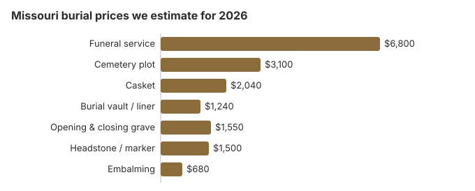

Burial Costs in Missouri (2026)
Our Missouri burial estimate is $15,230 to $19,730 with every cemetery charge counted, starting from a $6,800 funeral service and a $3,100 plot. Missouri separates oversight: the State Board of Embalmers and Funeral Directors licenses funeral homes, while endowed care cemeteries answer to their own state office. This page explains both, what a county may pay when there is no estate, the rules for moving a grave, and Missouri's two national and five state veterans cemeteries.
Missouri Burial Cost Items
| Burial item | Missouri figure | Typical spread |
|---|---|---|
| Funeral service | $6,800 | $5,100 – $8,840 |
| Cemetery plot | $3,100 | $1,550 – $6,200 |
| Casket | $2,040 | $680 – $5,440 |
| Burial vault / liner | $1,240 | $800 – $10,000 |
| Opening & closing grave | $1,550 | $500 – $3,000 |
| Headstone / marker | $1,500 | $500 – $5,000+ |
| Embalming | $680 | $500 – $1,500 |
About these Missouri figures: they are our model's estimates, not prices gathered from Missouri funeral homes or cemeteries, so use them to test quotes, not as a quote or professional advice. See our method and the disclaimer.

Counting the cemetery's fees, a Missouri burial runs $15,230 to $19,730 on our estimates, depending mostly on the casket and headstone.
Missouri Burial Choices
Lowering the Cost of a Missouri Burial
Steps that cut a Missouri bill:
- Get itemized prices. A Missouri funeral home must hand you its General Price List. A cemetery need not, but you can still ask it to price each charge on paper instead of quoting a package.
- Ask locally about small cemeteries. Church, town and family cemeteries may not advertise; a county office or the church itself can say who sells lots.
- Compare at least two funeral homes. Prices for the same service can differ, and the General Price List lets you set them side by side.
- Consider direct burial. Burial without embalming, viewing or a service removes several charges, and a memorial gathering can be held later at no cost to the funeral home. The General Price List must show direct burial both with a casket you supply and with the home's own container, so the two lines show what the casket adds.
Shopping Missouri Providers
The FTC Funeral Rule requires a funeral home to give prices over the phone, so two or three calls can show how Missouri providers compare before you visit anyone. Write down each home's direct burial price, its basic services fee and its charge to receive a casket from elsewhere, if it lists one, so the comparison is like for like.
Burial Resources
- Funeral Consumers AllianceNonprofit consumer advocacy for funeral pricing
- Headstone & Monument GuideCosts, types, and buying tips
- Green Burial OptionsEco-friendly and natural alternatives
- Best Online Casket RetailersCaskets bought online often cost less
- Best Burial InsuranceCompare plans to cover burial expenses
Compare Funeral Costs
- Average Funeral Cost in 2026National cost breakdown with real prices
- Cremation vs. Burial Cost ComparisonSide-by-side price comparison to help you decide
- Funeral Cost BreakdownEvery line item explained: know what you're paying for
- Cheapest Funeral OptionsLower-cost alternatives, with typical price ranges
- Direct Cremation: Most Affordable OptionNFDA 2023 median $2,645 with a family-supplied container (latest available)
- How to Compare Funeral PricesStep-by-step guide to getting the best price
Missouri families may buy the casket or marker from someone other than the funeral home. Our online casket retailer guide and headstone cost guide give price points to bring to that conversation, and the payment assistance guide lists programs that may help.
Frequently Asked Questions
What does burial cost in Missouri?
Our Missouri total is $15,230 to $19,730: about $6,800 for the service, $3,100 for the plot, $2,040 for a casket, $1,240 for a vault, $1,550 for the grave opening and closing, and $500 to $5,000 for a headstone.
Is a vault required in Missouri?
No Missouri law requires a vault, though a cemetery may. We estimate about $1,240 for one; a liner usually costs less where the cemetery accepts it.
The state Office of Endowed Care Cemeteries oversees endowed care cemeteries (RSMo 214.270 to 214.516). A complaint about one must be written and can go by mail to 3605 Missouri Blvd, P.O. Box 1335, Jefferson City, MO 65102.
What are the cheapest burial options in Missouri?
Direct (immediate) burial, with no embalming, viewing or funeral-home ceremony, is normally the cheapest burial line on a Missouri price list, and the FTC Funeral Rule bars a handling fee when you bring your own casket. Eligible veterans pay nothing in a VA national cemetery for the grave, opening and closing, liner or marker. At an endowed care cemetery, part of the plot price is set aside by law: RSMo 214.320 sends at least 15% of each grave's sale price, or $20 if greater, into the care trust. Anyone visiting an abandoned family cemetery or private burying ground that is surrounded by private land has a right of reasonable access during reasonable hours under RSMo 214.132.
How do Missouri cemeteries set prices?
Each cemetery sets its own prices, so a church or town cemetery may charge differently from a large memorial park. At an endowed care cemetery part of the lot price goes into the care trust by law, which is one reason to ask what a quoted plot price includes.
What is Missouri's all-in burial cost?
Line by line: service $6,800, plot $3,100, casket $2,040, vault $1,240, opening and closing $1,550 and a headstone of $500 to $5,000, for $15,230 to $19,730 before cash advance items such as death certificates.
Does Missouri have natural burial?
Yes. Bellefontaine Cemetery in St. Louis has Evergreen Meadow, a two-acre natural burial ground where bodies are buried without embalming or vaults. The cemetery explains its rules on its natural burial page.
Outside the St. Louis area, the practical route is to ask a Missouri town or church cemetery whether it will accept a burial in a shroud or plain wooden box without a vault. Whatever the cemetery decides, a Missouri funeral home has to let you decline embalming and use a casket or shroud you bought elsewhere (FTC Funeral Rule, 16 CFR 453.4 and 453.5).
More for Missouri
Moving a grave in Missouri: who can authorize it
Missouri lets a cemetery owner disinter and move remains in three situations. The first is to correct its own burial error, and the cemetery pays for that. The second is on written, acknowledged instructions from the next of kin. The third is under a circuit court order (RSMo 214.208; checked October 29, 2026).
- If the original next of kin has died: a majority of the surviving spouse, children and parents can sign. If none of them are living, a majority of the grandchildren and siblings can.
- Who pays: the family pays for a move it requests. Under a court order, the court decides who pays, including for the court proceedings.
- Leaving the cemetery: before remains are taken out of the original cemetery, notice has to be filed with the county coroner or medical examiner (RSMo 194.105).
Missouri burial oversight and county help
Funeral homes in Missouri are licensed by the State Board of Embalmers & Funeral Directors, which takes license checks and complaints at 573-751-0813. Endowed care cemeteries have their own regulator, described above.
The Funeral Consumers Alliance counts nine states that make a family use a funeral director, and Missouri is not one, so the plot, opening and container can be handled with the cemetery itself.
Burial can proceed once the permit is issued. Missouri sets no fixed waiting period for cremation either, though a permit is required (20 CSR 2120-2.071; RSMo § 194.119).
When there is no estate
Missouri looks to the estate first for burial costs. If there is none and no one liable can pay, the county commission may allow them (RSMo §§ 58.460, 58.550), so speak to the commission first. Social Security adds only a one-time $255, payable to a surviving spouse or child.
Veterans
Jefferson Barracks National Cemetery (314-845-8320) takes burials, and Springfield National Cemetery (417-881-9499) takes cremated remains only. Missouri also runs state veterans cemeteries at Bloomfield (573-568-3871), Fort Leonard Wood (573-774-3496), Higginsville (660-362-6111), Jacksonville (660-372-6024) and Springfield (417-823-3944). Eligible veterans pay nothing for the grave or marker in any of them (VA National Cemetery Administration).
Missouri burial checklist
- Have the cemetery put its charges in writing, separate from the funeral home's.
- Check whether the cemetery takes markers from outside sellers.
- If there is no estate, speak to the county commission before any purchase.
- Veterans: phone Jefferson Barracks to confirm eligibility.
- Board complaints go to 573-751-0813.